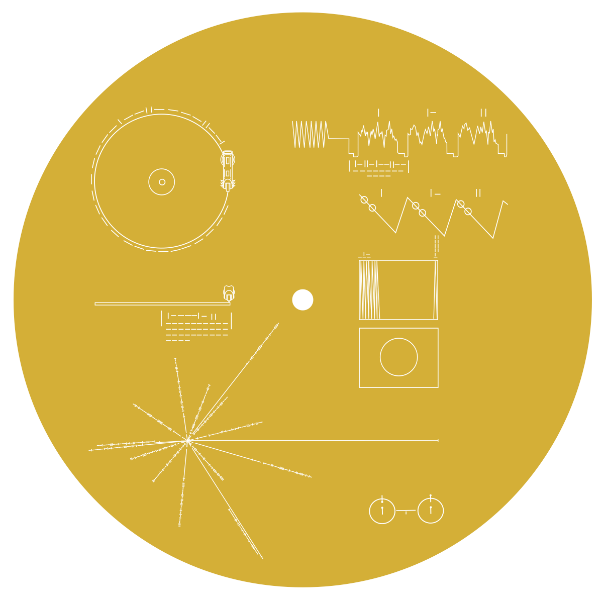

Voyager 2 left Earth on 20 August 1977 and Voyager 1 on 5 September 1977, each carrying a gold-plated copper record bolted to its side. Alongside the music and the greetings, 116 photographs are stored on it — not as pictures, but as sound. These were decoded here from a 384 kHz digitisation of the original master tapes.
Twenty of them are in colour — scanned three times through red, green and blue filters, which is why the record carries 156 pieces of audio for 116 pictures. The colour ones are composited in your browser, right now, from those three separate monochrome scans. Open any one to put the decode beside the published reproduction of the same photograph, and to hear the 4.3 seconds of sound it came out of.
Each photograph on the record is 512 vertical stripes, played one after another. A stylus running the groove produces a warbling tone; the loudness of that tone, moment by moment, is the brightness of the picture. Lay the stripes side by side in the right order, at exactly the right spacing, and the photograph appears. Get the spacing wrong by a fraction of a percent and it shears into diagonal mush. That is the whole problem, and everything below is about getting the spacing right and then undoing what the 1977 equipment did on the way in.
Every decoder written for this record, including the ones this project started from, treats a stripe as a smooth brightness sweep chopped into equal bins. It isn't. The 1977 hardware sampled the slide once per television scan line and held each value until the next — so a stripe is a staircase of flat steps. Looking for that step rate in the audio finds it exactly where the hardware's own patent says it should be.
| steps per stripe | value |
|---|---|
| measured, from the audio | 262.519 ± 0.043 |
| predicted by the 1977 hardware spec | 262.500 |
| disagreement | 0.007% |
It also explains a fudge that had sat unexplained for years. The 2017 decoder carried a hardcoded nudge of “−12 samples on even stripes” that its own author called a brainless heuristic. Twelve samples is one step. It was the 1977 sampling clock showing through, and once you know the staircase is there, the nudge stops being a fudge and becomes a measurement.
Every previously published version of these pictures has the same flaw: a hammered-metal, bas-relief quality, as if the photograph had been stamped into foil. Large flat areas — a sky, a wall, a page — sag towards grey, and only the edges survive. The author of the 2017 decoder described it precisely and could not fix it. It is the biggest visible difference between these images and the ones that were on the web before.
The cause is that nothing in the 1977 recording chain could hold a steady brightness level. Every analogue path of that era slowly forgets a constant and drifts back to the middle, so a long stretch of unchanging brightness fades out while edges, which change fast, come through fine. It is not damage to the record; it is what the equipment did on the way in.
So it can be undone — exactly, not approximately — if you know how fast the drift was. Two details decide whether it works. It has to run in the order the sound was recorded, straight across the boundary from one stripe into the next, because that is how time ran on the tape; doing it stripe by stripe is a different operation and a bug, and it shipped here once before it was caught. And the drift rate is measured from the record's own signal, from a stretch that carries no picture at all — a time constant of 530 samples on one channel and 295 on the other, at the master tape's 384 kHz. Nothing about what the photographs should look like is assumed anywhere in it.
Every decode here was lined up against the published reproduction of the same photograph, as a check. Fourteen of them refused to match — until mirroring was allowed, at which point they snapped into place: the elephant at Mae Sariang, the house being built in Cameroon, and the plates from Bali, Guatemala, Japan, Greece, Turkey, Australia, the tree toad and the whistling swans among them.
The record had them the right way round and the printed copies have them backwards. Since the record is the authority on what is on the record, it is the reproductions that get flipped here to match, never the decode. A fifteenth was too close to call and was left alone.
The 1977 operator scanned every slide the same way, so the first stripe is always the same physical edge of the frame. That makes a half turn special: it is the one rotation that reverses the scan while keeping it on the same axis, and reversal is audible in the signal. So “this slide was mounted upside down” is a claim you can check without any reference picture at all — the only per-image orientation evidence the record offers.
It caught a real mistake. The pulsar map was the one image marked as a half turn, and the one image that played backwards. It had been rotated at some point to match a printed plate. The record's own orientation is restored here, and the plate is the thing that got turned.
The full measurements behind all of this — including the sync-timing work that makes the spacing hold, and two published claims of ours that turned out to be wrong and are kept on the record — are in the repository.
This project wants two things that pull against each other. One is a clean-room decode: recover the pictures from the artifact alone, the way a recipient who had never heard of Earth would have to. The other is simply the best pictures we can get, which means checking the work against the original slides. Both are worth having. Mixing them quietly would make the result worthless, because you could no longer tell which claims survive without the answer key.
So everything here carries a label saying what it was allowed to see.
| Tier | May use | Covers |
|---|---|---|
| 0 · Record | the audio and the engraved cover — what a recipient has | every decoded pixel: timing, spacing, geometry, the brightness fix above |
| 1 · Universal | things any observer could work out without knowing Earth | the denoiser, and combining the three colour scans |
| 2 · Earth | the original slides and their captions — cheating | which edge is up, which reproductions are mirrored, the titles, which scan is red, and all scoring |
The rule that makes this more than a label: the decoded pixels have to be reproducible with no reference material on the disk at all. A check walks the decoder's imports and fails if any part of it can so much as reach a reference file. The decoder reads exactly one input, the WAV.
Rotation is cheating, and always will be. The record never says which edge is the top. We tested whether it at least says which slides were laid on their side — a quarter turn leaves no trace, because the 1977 operators reframed each slide to fill the frame. (A half turn it can catch, as above; a quarter turn it cannot.) This gallery rotates the pictures anyway, so you needn't tilt your head. That turn is presentation rather than decoding, though it is currently baked into the thumbnail files instead of applied when they are drawn, which is logged as a defect rather than glossed over.
There is one orientation check the record does give you, and it is rather beautiful. Four ways of reading the stripes fit the instructions on the cover, and two of them are mirror images of the other two — get that wrong and all 116 pictures come out flipped, with nothing inside the pictures to catch it. But image 2 is the pulsar map, and the pulsar map is also engraved on the cover that is bolted to the record. Fourteen lines radiating at fourteen different angles is strongly handed, so holding the decode against the engraving settles the handedness of all 116 at a stroke. We have not cashed that check ourselves — it needs a rectified scan of the engraving, which we do not hold — so it is a check the record offers rather than a result of ours. The calibration circle checks your timing; the pulsar map checks your handedness. Neither needs a word of language.
The recording chain could have carried more than a thousand elements along a stripe, but the 1977 camera resolved 138 to 172. We already sample well finer than the camera could see, in both directions. Everything the camera captured is in these pictures — and anything sharper that a program might now produce would be invented, not recovered. That is why this decoder does not do it, and why every method here is judged by whether it can predict measurements it was never shown, rather than by whether the result looks nicer.
Twenty of these images were scanned three times — once through a red filter, once green, once blue. That is twenty sets of three independent noisy looks at one scene. Train a network to turn one scan into another and it cannot possibly predict the other scan's noise, so the only thing it can learn is the scene underneath. It is trained on this record and on nothing else: no photographs from anywhere, no outside image collection. Nothing is invented, which is why the word here is denoised and not enhanced or reconstructed.
Scored on nineteen scenes it had never seen, it beats the raw decode every time, and beats a simple blur every time. But it costs something, so the button also offers the decode with no brightness correction at all, and the whole pipeline can be judged by eye. Run it past the calibration circle — the one check a denoiser cannot game — and it slightly regresses: radial rms 0.836 → 0.849 px, with the axis ratio essentially unmoved at 1.005. We are not going to tell you why. The last time a regression like this was explained confidently — the denoiser softening a ring a pixel wide — the explanation was wrong, and the real cause turned out to be 8-bit quantisation in the input. A plausible mechanism is not evidence. And the 96 black-and-white images have no third scan to check against, so using the denoiser there is an extrapolation rather than a measurement.
The three colour scans could run red-green-blue or the reverse, and published decoders disagreed. The record's designers thought of this: one of the images is a photograph of the solar spectrum, and any chemist anywhere would recognise hydrogen's absorption lines in it and be able to attach wavelengths to positions. We measured how well that works. It gives the ordering — the three scans peak in a clean sequence across the frame — but the lines themselves come out at half a percent to 1.6% of the signal, which is not readable. So the direction was settled instead by knowing what colour an ocean is, which is Earth knowledge and therefore cheating. A key that its own designers' species cannot read is not yet a key.
This page is a gallery. The decoder itself is Python, it lives in the repository, and it runs on the master tape in about ten minutes — the first thing it hands you is the calibration circle, which tells you whether your own timing is right. What you see here was decoded offline; Paint it from blank replays a frame's audio and paints the picture in step with it, exactly as the 1977 scan ran, but it is replaying a decode rather than performing one.
The reference images are for checking and labelling only. Nothing on the reference side has ever fed pixel recovery. Where a plate has not been confidently matched to one of our images the panel says match uncertain rather than showing a guess.
Everything above in more detail — the measurements, the corrections we have made to our own published numbers, and the nine approaches that were tried and did not work — is in the repository. Forks and better ideas are welcome.